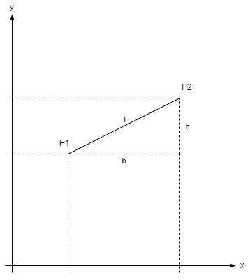

04 - Modularisieren von C Code¶
1. Übersicht¶
In diesem Praktikum wird eine kleine Sammlung von Funktionen als Modul erstellt.
In der ersten Aufgabe schreiben Sie zu einem bestehenden C Programm die notwendigen Header Files plus passen das Makefile so an, dass die entsprechenden Module mit kompiliert werden.
In der zweiten Aufgabe erstellen Sie Makefile Regeln um aus Konfigurationsdateien graphischen Darstellungen zu erzeugen.
2. Lernziele¶
In diesem Praktikum lernen Sie die Handgriffe um ein Programm zu modularisieren, d.h. in mehrere Module aufzuteilen.
Sie wissen, dass ein Modul aus einem C-File und einem passenden H-File bestehen.
Sie können Header Files korrekt strukturieren.
Sie wissen wie Include Guards anzuwenden sind.
Sie können Module im Makefile zur Kompilation hinzufügen.
Sie können anhand einer Beschreibung Typen und Funktionen in den passenden Header Files deklarieren.
Sie können Makefile Regeln schreiben.
Die Bewertung dieses Praktikums ist am Ende angegeben.
Erweitern Sie die vorgegebenen Code Gerüste, welche im git Repository snp-lab-code verfügbar sind.
3. Aufgabe 1: Modularisieren¶

3.1 Teilaufgabe Modules einbinden, Header Files schreiben¶
src/objects.h
2 Datenstukturen definieren
struct pointmit 2 double für x und y Koordinatestruct linemit 2 point
src/functions.h und .c
2 Funktionen deklarieren und definieren
Berechnung der Länge
get_lengtheiner Linie (Annahme: Koordinaten sind alle positiv)l = sqrt(h^ 2 + b^ 2)
ev. muss hier in den Anhang
#include <math.h>
Berechnung der Steigung
get_slopeder Linie gegenüber dem Koordinatensystemm = h / b
tests vorgeben
src/objects.h
Include Guard
Includes
Struct für Punkt und Linie
Include Guard
src/functions.h
Include Guard
Includes
Deklarationen der Funktionen für Berechnung der Länge und Steigung
Include Guard
src/functions.c
Includes
Definitionen der Funktionen für Berechnung der Länge und Steigung
Include Guard
4. Aufgabe 2: Makefile Regeln¶
Makefile ergänzen, damit Modul functions korrekt eingebunden und kompiliert wird.
Kompilieren Sie das ganze mittels make clean default. Es sollten keine Compiler Fehler auftreten.
4.1 Neue Regeln hinzufügen¶
Vorraussetzung: tab2svg.sh aus Praktikum 3 wird um die Möglichkeit erweitert eine Linie zu zeichnen (
line:x1:y1:x2:y2:color)Studierende erstellen
mind. 2 Files
long.lineundshort.linemit 2 unterschiedlichen LinienMakefile Regeln um aus einem File
.lineein File.svgmit Hilfe des Scripts zu erstellenPHONY Regel
displayum beide.svgmit Firefox darzustellenVorgabe: sie sollen eine Variable für die Input-Dateien nutzen
Nachdem das Programm in Aufgabe 1 umgesetzt ist, geht es nun darum, im Makefile Regeln zu definieren welche die einzelnen Schritte von den Source Files zu den png Files ausführen.
Prüfen Sie schliesslich die Umsetzung mittels make display.
5. Aufgabe 3¶
Studierende sollen Ausgabe von
make docanalysieren und die Include Diagramme erklären können
make doc
firefox doc/index.html &
6. Bewertung¶
Die gegebenenfalls gestellten Theorieaufgaben und der funktionierende Programmcode müssen der Praktikumsbetreuung gezeigt werden. Die Lösungen müssen mündlich erklärt werden.
7. Erweiterung Doxyfile für Abhängigkeitsanalyse¶
--- /home/vagrant/huno/snp-new/snp/praktika/Shared/work/Doxyfile 2022-02-07 21:16:42.343302707 +0100
+++ /home/vagrant/snp/Doxyfile 2022-02-07 22:22:36.266839126 +0100
@@ -297,14 +297,14 @@
UML_LOOK = NO
UML_LIMIT_NUM_FIELDS = 10
TEMPLATE_RELATIONS = NO
-INCLUDE_GRAPH = NO
-INCLUDED_BY_GRAPH = NO
+INCLUDE_GRAPH = YES
+INCLUDED_BY_GRAPH = YES
CALL_GRAPH = NO
CALLER_GRAPH = NO
-GRAPHICAL_HIERARCHY = NO
-DIRECTORY_GRAPH = NO
+GRAPHICAL_HIERARCHY = YES
+DIRECTORY_GRAPH = YES
DOT_IMAGE_FORMAT = png
-INTERACTIVE_SVG = NO
+INTERACTIVE_SVG = YES
DOT_PATH =
DOTFILE_DIRS =
MSCFILE_DIRS =